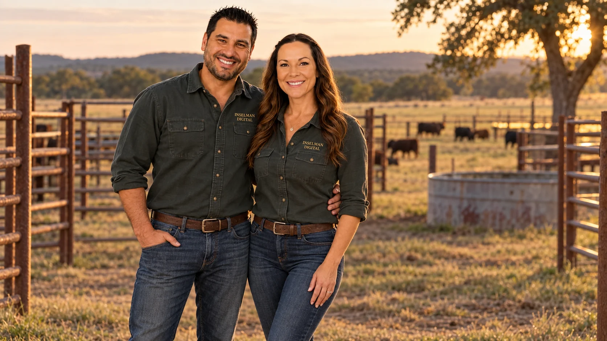

Cattle health operations software · Built in Southern Oklahoma
Know what’s happeningacross your yard.
Cattle Handler™ helps crews record treatments quickly and gives managers one clear view of activity across pens, medications, and reports—so the day’s work is easier to capture, review, and act on.
Built alongside real cattle workflows · Configured for your operation · Works in a phone or desktop browser
Quick field entryCapture treatment details while the work is happening.
Shared yard visibilityReview activity by pen, treatment, and time.
Clearer recordsKeep field work organized for managers and office staff.
SAMPLE YARD VIEW Illustrative data
LIVE YARD INTELLIGENCE
Cattle Handler™
ACTIVE TREATED36
BRD WATCH3 pens
HIGH RISKDays 13–21
M1 · Howard Ranch8% early watch
M4 · Turner Cattle10% whole-pen review
M7 · Red River5% mortality alert
BRD WatchTreatment PressureFull-Pen Protocol
QUICK TREATMENT
Cow #214
PENM4
MED6 cc
WATCHBRD
RespiratoryDepressionSync ✓
Built for modern cattle work
This is more than recordkeeping. It is live treatment intelligence.
Field records become easier to review when treatment activity, observations, and pen context live together. Managers can spot changes worth a closer look without chasing down notes from across the yard.
01 · Health watch
Notice patterns worth reviewing.
Bring recorded symptoms and treatment activity together to help highlight pens that may need a closer look from your team.
Configurable watch pointsSet operational thresholds that fit the way your yard works.
Symptom-aware entryCapture field observations like respiratory signs, depression, discharge, injury, and more.
02 · Active Treatment
See treatment pressure in real time.
Understand which pens are active, how many cattle are being treated, and where attention is concentrating without having to sort through texts or handwritten notes.
Pen-level treatment visibilityMonitor active treated cattle, recent entries, and pressure by area.
Context over timeReview activity alongside arrival timing and pen history.
03 · Your protocols
Make your operating rules visible.
Use configurable thresholds to surface when a pen meets your team’s criteria for review or a recorded group response.
Whole-pen review logicConfigure review points around the thresholds your operation uses.
Recorded responseMark, record, and preserve full-pen treatment actions for later reporting.
See Cattle Handler™ in motion
From fast field entry to live health intelligence.
See how treatment recording, observations, pen activity, medication tracking, and reporting connect inside one working system.
Record a treatment from a phone in seconds
See pen-level health pressure and active treatment activity build in real time
Turn daily yard work into organized reporting, accountability, and management visibility
A closer look at Cattle Handler™ ↓
Play the product film when you’re ready. Video loads on request.
One connected workflow
Practical tools for field crews and the office.
Start with fast treatment entry, then give supervisors and office staff the records and visibility they need to keep the operation moving.
01 · Treatment
Fast field entry
Record cattle number, pen, medicine, dosage, dart use, notes, and treatment details from a phone without slowing the work down.
02 · Yard Pulse
Live yard visibility
See active treated cattle, pen activity, head counts, and treatment concentration without digging through separate records.
03 · BRD Watch
Early-warning awareness
Bring observations and treatment patterns together to help teams decide what deserves a closer review.
04 · Protocols
Whole-pen decision support
Support pen-level action with configurable thresholds, full-pen treatment recording, and cleaner escalation visibility.
05 · Medicine
Medication intelligence
Track medicine, darts, cc usage, pricing, open bottle workflow, and treatment totals so inventory and billing stay useful.
06 · Reporting
Permanent operational records
Create finalized reporting, owner history, searchable records, and shared accountability with cloud-connected data.
Designed for speed
Enter it once. Let the system organize, watch, and surface the rest.
1
Identify
Select the cattle number, pen, and owner context from the field.
2
Treat
Record medicine, amount, dart use, notes, and optional symptom observations.
3
Signal
The system updates activity views and configured watch points as records are saved.
Separate day-to-day field entry from management controls while keeping everyone on the same data instead of separate phones, separate notes, and separate guesses.
User roles for staff, supervisor, and admin access
Cloud activity history for accountability and visibility
Shared, searchable records instead of scattered text threads
Monthly reporting that can be finalized and preserved
Operational insight
Keep useful context with the record.
Structured treatment details and observations make it easier to review what happened across a pen, a crew, or a period of time.
Optional symptom capture tied to treatment events
Pen-level pattern visibility over time
Searchable records for operational review
Configured around your yard’s terminology and workflow
Custom software for cattle operations
Your yard has its own rhythm. The software should fit it.
Cattle Handler™ can be configured around your operation’s pens, users, medications, reporting needs, and day-to-day workflow. Start with a walkthrough, then shape the setup around the work your crew actually does.
Your company / ranch identityCustomer-facing branding and operation name.
Pen structure & watch pointsSet up pen names, yard layout, and operational thresholds for review.
User rolesSeparate fast field entry from supervisor and administrative controls.
Medication & pricing setupAdapt medicine choices, dosage workflow, inventory handling, and internal pricing.
Reporting & accountabilityShape outputs around what ownership, office staff, and management actually need.
Good questions
A clear fit starts with a conversation.
Here are a few things cattle teams often want to know before seeing the system.
Does Cattle Handler™ diagnose illness?
No. It organizes the observations and treatment activity your team records. Watch points are operational prompts for review, not veterinary diagnosis or a substitute for your veterinarian’s guidance.
Can it be configured for our pens and workflow?
Yes. Setup can reflect your operation’s pen names, user roles, medication workflow, reporting needs, and agreed review thresholds.
Can our crew use it from a phone?
Cattle Handler™ runs in a browser and is designed for phone and desktop use. A walkthrough can help confirm how it fits your devices and connectivity in the yard.
What happens in a demo?
We’ll show the core field-to-office workflow and discuss what your operation would need. The walkthrough is tailored to your questions.

Inselman Digital · Southern Oklahoma
People behind the product
Built and supported by a team you can reach.
Cattle Handler™ is developed by Will and supported by Rebecca. When you request a walkthrough, you’ll talk directly with the people building the product and helping customers get started.
Product & engineering
Will Inselman
Lead Developer
Customer onboarding & support
Rebecca Inselman
Head of Customer Success
Start with a walkthrough
See how Cattle Handler™ could fit your operation.
We’ll walk through the field workflow, answer your questions, and talk through the setup your yard would need. No pressure—just a practical look at the system.
Small cookie note. We use Google Analytics and Microsoft Clarity to understand site performance. Analytics begin automatically after a short delay unless you choose Essential only.